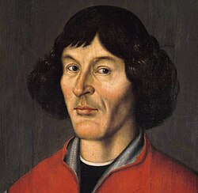

Kim był Mikołaj Kopernik?


Mikołaj Kopernik był polskim astronomem, matematykiem, prawnikiem i lekarzem. Najbardziej znany jest z opracowania teorii heliocentrycznej, według której Ziemia i inne planety krążą wokół Słońca.
Jego odkrycia miały ogromne znaczenie dla rozwoju astronomii i nauki. Kopernik należy do najważniejszych uczonych w historii.